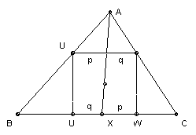

ABC is an acute-angled triangle. A' is the center of the square with two vertices on BC, one on AB and one on AC. Similarly, B' is the center of the square with two vertices on CA, one on AB and one on BC, and C' is the center of the square with two vertices on AB, one on BC and one on CA. Show that AA', BB' and CC' are concurrent.
Solution

Let the ray AA' meet BC at X. Since AX passes through the center of the square, we have VX = q, WX = p, as shown in the diagram. By similar triangles BX/XC = p/q. Hence BX/XC = (BX + p)/(XC + q) = BW/VC = (BV + s)/(CW + s), where s is the side of the square. But BV = s cot B, CW = s cot C, so BX/XC = (cot B + 1)/(cot C + 1). We are now home by Ceva's theorem.

© John Scholes
jscholes@kalva.demon.co.uk
14 Oct 2002